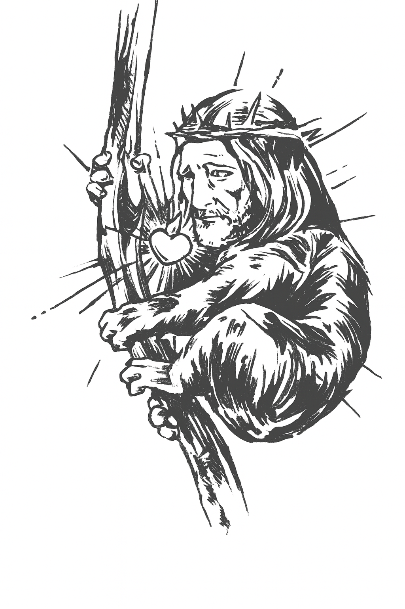

Dreams and prophecies; memories of a raving koala man
Published on December 02, 2025

At night, dreams open the gates of our minds. When memories merge subconscious and reality, new stories come to life.
Why do we remember dreams as if they weren't fully ours, but also cherish them as the most valuable belongings all at the same time? This question appears before us with a supernatural force of a universal feeling that is merely experienced in the middle of the night: the ephemeral certainty of having lived a story that does not entirely belong to us. These tales are written with no consciousness, dreams, that seem almost like drawings in the sand under the menace of waves of thoughts. We return to them again and again, with the hope of being able to understand why some of the images we dream about vanish instantly and others against our will just happen to remain forever.
Dante remembers his very first dream: a koala with the head of Christ holding itself to an eucalyptus tree. A dream so beautifully disturbing– that ended up tattooed in his skin, as if physically having it forever would help fix what the mind, inevitably, tends to distort. This dream no longer means the same, it has shifted, from something that from fear turned into an intimate passing cloud in Dante's brain. He remembers it so vividly but there's a blur in the things he describes and the memories he holds. Has memory quietly filled in the gaps?
Science has a somewhat suspicion: dreams are not quite stored as photographs or film, but as fragments. Freud believed that they were a theatre of desires, fears and disguised symbols. A great example of a dream keeper could be Salvador Dalí, he could turn his very own dreams into surrealistic images so that at times coils appear more real that life itself. Then again modern neuroscience shows us something else: we don't store dreams, we reconstruct them. Every time a person gets to remember a dream, and re write it, we blend pieces, images, thoughts, emotions and opinions. As one day in life is presented to us as something we only get to experience once, a dream gets presented to us in the same way. And as we get to construct a narrative from our memories, dreams get to construct their own story every time we try to tell them again.

The blend of creating and recollecting places us in a paradox, one that only humans can experience. How much of what we think we remember belongs to the dream, and how much belongs to ourselves? are the stories we tell: the ones we lived while sleeping, or the ones we intend to communicate awake? Are we trying to make sense of what we don't understand? Memory is not an archive but a dynamic process. and dreams are just a poetic laboratory of whatever haunts our minds.
Think of memory not as a library of dusty books, but as a living document, constantly being edited and revised. This is a feature, not a bug. It allows us to learn from our past and adapt to our future. A painful memory can soften over time, its sharp edges worn down by successive recollections. A joyful one can become a touchstone, its warmth and light amplified with each visit.
It's unavoidable to wonder ¿what did the first humans dream about? In our search for truth and answers we have found a lack of logic, absurdity and somehow a lot of sense and that's why dreams captivate art, science and every human life all at once. Dreams speak a language we can somehow understand but never seem to translate.They force us to confront a part of ourselves that operates without permission. And when we try to capture them — in a sentence, a drawing, a tattoo, a story — we discover they have already changed shape.
In the following lines we'll explore memories and dreaming, the way they distort, and what this shift and merging reveals about life itself. Because perhaps the most surprising thing isn’t that a koala with the face of Jesus appeared in a dream, but that, over time, that dream continues to transform within us.
Memory, often idealized as a perfect recorder of life, is actually an artist that reinterprets everything we've lived. For Dante Pacreu, the interviewee, this idea became a reality through a vivid memory from his childhood, a scene that seems to be pulled straight out of fiction.
"I have the memory of being in a bank—I think a HSBC or Scotiabank—waiting while my mom was in line. I clearly remember a tall, bald man, about sixty-something, wearing a red polo shirt. In my memory, he had walrus-like tusks, plus a very prominent mustache. I don't think that corresponds to reality, but the image I preserve is of that man with protruding tusks, as if he were wearing a costume."
This surreal image is proof that memory not only reconstructs but actively constructs, generating codes and forming new images with each recollection. This distortion stems from childhood hyperbole, due to a certain tendency in childhood to exaggerate everything.
That explains how a prominent mustache was immediately associated with an animal, merging reality with imagination to create a new, vivid memory that, over the years, Dante recapitulated and concluded was impossible in reality. The impact is substantial, because what we preserve of our past is an edited, personal version that reveals more about who we were at the moment that memory was recorded than about the objective truth of the event.
If diurnal memory is deformed, the nocturnal dream begins to be a chaotic laboratory. The instability of memory is not limited to sleeping hours; even our most ordinary memories. Freud taught us to distinguish between latent content; the hidden desire, and the manifest content; the remembered image in dreams. The testimony of the “walrus at the ATM” obliges us to resort to that logic in the memory.
The manifest content is the anecdote of the man in the bank; the distorting element refers to the walrus tusks. This oneiric addition is born from the hyperbole before the incomprehensible, due to the fact that it acts as a symbol inserted into a real scene. The brain, not finding a logical explanation, filled the gap with a symbolic figure, confirming that memory does not store, but rewrites.
This mixture between memory and creation places us before a human paradox: what stories are we really telling, the ones we lived asleep or the ones we invented awake to give meaning to what we do not understand? In Dante's memory, the most persistent dream is that of Christ Koala, which is an archetype of this alteration, where the defenseless animal is joined to a globally known figure, trying to integrate that duality of fear that only in childhood can be provoked.
The dream of the Christ Koala, viewed with a sepia filter with an intense red heart that bleeds, became a symbol tattooed on Dante's skin. This symbol, which terrified him as a child, has become an attempt to unite the opposites; the divinity with the mundane, with the “vulnerable” of the koala. This effort of construction leads us to the other side of the coin; violence as a reflection of vulnerability
In his dream, Dante fights an aggressor until he destroys his face and turns it into “a mass of flesh”. This act represents an infantile and regressive response to manage the feeling of disgust or fear of the incomprehensible, which, according to psychoanalytic theory, "returns" in his psyche through small animals that become deformed. In essence, this reveals that both the koalas and the “mass of flesh” are disguises that the subconscious uses to narrate the crude truths of personal identity and the mind's capacity to be able to rationally face the unknown.
Memory is a Process
Dreams are just as mysterious as the person who carries them, acting as a reflection of their reality and their understanding of the world they observe; they are also a vehicle for making sense of the world during the time we spend awake—its textures and the effects it has on us.
One of Dante Pacreu’s earliest memories of dreams is linked to fear. He says he has always had a clear memory of his life and even has flashes of moments from when he was in his crib. Being able to easily recall his first dream shows that it had a particular effect on him, even leaving a kind of mark on his own identity.
Because of the impact dreams have had on him, he has always been interested and curious about them. At a young age, he kept a journal where he recorded each of his dreams as a memory exercise and to identify patterns, hoping to find meaning in their expression.
There is one particular dream where Dante finds himself in a bank, standing in line while his mother is busy making a transaction. He says it was probably inside an HSBC or a Scotiabank, past Jardines de la Hacienda. This is where a distortion in the dream appears in his memory. However, he clearly recalls the figure of a man, tall, bald, wearing a red polo shirt. He was elderly, around seventy years old. What made him enigmatic was not those features, which could resemble anyone you might see on the street, but the fact that he had walrus tusks.
Unlike the dreams mentioned before, Dante doesn’t believe this one is connected to reality, but for his memory it represented an understanding: memory is not objective, something he learned while studying industrial design. Memory is a process, specifically, a constructive one, especially when it comes to color, which is always altered in our processes of recollection. “Memory deceives us, and many times the things we remember one way are, in reality, something else.”
"Memory deceives us, and many times the things we remember one way are, in reality, something else.”
During childhood, we often cartoonize aspects of life, exaggerate them, make them hyperbolic. It’s possible that he saw a bald man wearing a red polo shirt with a pronounced mustache; within the realm of possibilities, Dante saw someone with those traits, and in his dream, that image was interpreted with walrus tusks.
It sounds almost comical. Is there anything in Dante’s life that could reflect this dream? The only thing he is certain of is that the image terrified him at the time. Even when he visited a bank later on, the memory would return to him.
Inside a wooden crib, Dante sleeps and begins to fall into a dream in which a Christ figure appears hugging the trunk of a tree, similar to a eucalyptus. Christ begins turning his head and speaking directly to him. What he says is pure glossolalia—he manages to articulate something, but it lacks sense or coherence.
“I remember waking up, being all scared in the crib, and calling my parents. I must have cried a bit—my mom came, picked me up, and they took me to their room so I could lie between them.”
That is the first image that ever caused him fear. Over time, it has transformed, gaining new meaning and interpretation. At one point it felt religious, like some sort of apparition. Was Dante a prophet? Was God trying to say something?
Today, it is simply a reference point for understanding dreams in a more psychoanalytic way—how divinity can be found even in the most mundane things. The face of God in the body of such a peculiar animal as the koala; as Dante puts it: “It’s the highest symbol of Christianity in the body of a koala, which, with all due respect, are complete idiots.”

Dreams and memories reveal themselves not as fixed records but as evolving constructions stories we rewrite each time we recall them. Through Dante Pacreu’s experiences, we see how the mind rearranges symbols, emotions, and fragmented images to make sense of both fear and familiarity. His memories, from the walrus-tusked stranger at the bank to the Christ-Koala dream, illustrate a universal paradox: we trust our memories as truth, even though they shift and distort with every retelling.
Scientific research supports this idea. Neuroscience shows that dreams are not stored like photographs; they are reconstructed through emotional processing, symbolic association, and the brain’s attempt to fill in gaps where logic fails. What Dante remembers is not the event as it happened, but the meaning his mind created in response to it. This blending of imagination and recollection demonstrates that dreams act as a laboratory for identity—a place where vulnerability, symbolism, and childhood exaggeration converge.
Ultimately, the stories we tell about our dreams are just as revealing as the dreams themselves. They expose how we interpret fear, how we negotiate memory, and how we search for coherence in the chaos of the subconscious. Dante’s Christ-Koala, once a source of terror, transformed into a personal emblem—proof that even the most unsettling dream can be reshaped into a narrative of understanding.
In the end, dreams are not prophecies, nor are they perfect memories. They are bridges between who we were, who we are, and who we imagine ourselves to be. And perhaps their power lies precisely in that instability: in their ability to change shape as we do, carrying fragments of meaning that evolve long after the dream has ended.